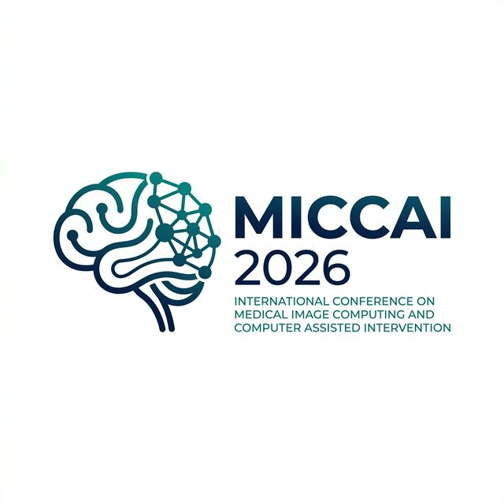

Move from visual explanations to internal, testable model mechanisms.
MICCAI 2026 Workshop

Mechanistic Interpretability for Medical Foundation Models
Understanding how medical foundation models compute, where they fail, and how mechanistic interpretability can make them safer and more reliable for clinical deployment.
Methods tied to medical imaging, multimodal AI, and trustworthy deployment.
Connect analysis to validation, debugging, and safer intervention strategies.
How MI4MedFM views Medical Foundation Models
Medical Image
MedFM
Internal Analysis
Prediction + Mechanism
Inspect
Features, circuits, activations
Validate
Clinical alignment & faithfulness
Intervene
Debugging, steering, monitoring
Overview
Why this workshop matters now
Medical foundation models are becoming central to imaging and multimodal clinical AI, but high-stakes deployment needs more than saliency maps or attention plots. MI4MedFM centers mechanistic interpretability: understanding the internal computations that generate model behavior.
The workshop creates a focused MICCAI forum for methods such as sparse autoencoders, circuit discovery, activation patching, causal tracing, steering, and weight-space analysis — while keeping the discussion tightly connected to clinical validity, robustness, and deployment safety.
Workshop Focus
Four Core Pillars of MI4MedFM
Our scientific agenda is structured around four interlocking goals that translate mechanistic interpretability into robust clinical practice.
Pillar 1
Inspect internal model mechanisms
Understand what features, subcircuits, and latent representations medical foundation models rely on when producing clinically relevant behavior.
- Sparse autoencoders and feature discovery
- Circuit analysis and causal tracing
- Activation-level understanding of decision pathways
Interactive 3D Layer Analysis
Hover over the foundation model representation below to expand the hidden layers and inspect the mechanistic computations driving clinical predictions.
Final Output & Concepts
Sparse Autoencoder Features
Early Attention Heads
🔍 Hover over the network to reveal layers
Topics
Topics of Interest
We welcome submissions across a wide range of themes bridging foundation model interpretability with safety and deployment.
Features, circuits, and internal representations
Methods that uncover what medical models internally encode and how those computations are organized.
Clinically meaningful validation
Tests that determine whether discovered mechanisms align with trusted medical concepts and downstream behavior.
Spurious cues, shortcuts, and hallucinations
Mechanistic debugging for brittle reasoning, domain shift, bias, and unreliable multimodal outputs.
Editing, steering, and control
Using mechanism-level insight to improve robustness, correct behavior, and reduce harmful failure modes.
Monitoring unsafe states in practice
Interpretability-guided monitoring and uncertainty-aware signals for safer clinical deployment settings.
Scalable, usable open infrastructure
Frameworks and workflows that make mechanistic analysis practical for medical imaging and multimodal MedFMs.
Program
Workshop Program
A focused 2-hour program featuring a keynote, oral presentations, and an interactive poster session with networking.
An invited talk framing trustworthy medical AI through the lens of mechanism and evidence.
Selected papers presented in concise oral sessions built for cross-disciplinary accessibility.
Poster-first visibility, direct discussion, and opportunities for clinicians and ML researchers to connect.
Opening & Framing
Setting the agenda, scientific motivation, and workshop goals for the MICCAI audience.
Keynote Session
Flagship invited talk on trustworthy medical AI, interpretability, and clinical reliability.
Oral Presentations
Curated short talks presenting methods, evaluations, and lessons for medical foundation models.
Coffee Break & Poster Session
Networking, poster interaction, demos, and in-depth discussion around methods and applications.
Keynote Speaker
Keynote Speaker
We are honored to feature leading experts in trustworthy and transparent clinical AI.

Keynote Speaker
Karim Lekadir
Trustworthy medical AI researcher
His pioneering research bridges deep learning robustness with ethical clinical translation, establishing critical benchmarks for fairness and certainty in medical deployments.
Call for Papers
Call for Papers
We invite original research contributions on mechanistic interpretability for medical foundation models. Submissions are welcomed across two tracks.
Important Dates
Paper Submission Deadline
TBA
Notification of Acceptance
TBA
Camera-Ready Deadline
TBA
Workshop Date
October 2026
Track 1
Proceedings Track
Original, unpublished research intended for the MICCAI satellite-events LNCS proceedings.
- Format: 8–10 pages (LNCS style) + references
- Review: Double-blind peer review
- Publication: Springer LNCS proceedings
Track 2
Non-Archival Track
Extended abstracts, previously published work, or work currently under review elsewhere.
- Format: 4-page extended abstract + references
- Review: Light review for relevance and quality
- Publication: Not included in proceedings (non-archival)
Submission Guidelines
Template
Use the official Springer LNCS LaTeX template
Review Process
Double-blind with conflict-of-interest safeguards
Evaluation Criteria
Relevance, rigor, clarity, validation, and reproducibility
Submission Portal
Link to CMT / OpenReview — TBA
Organizers
Organizing Committee
Our international committee unites expertise in medical image analysis, foundation models, and trustworthy artificial intelligence.

Faculty
Mohammad Yaqub
Associate Professor
MBZUAI
Faculty
Muhammad Haris
Assistant Professor
MBZUAI
Faculty
Muhammad Bilal
Professor
Birmingham City University
Faculty
Dwarikanath Mahapatra
Assistant Professor
Khalifa University
Faculty
Imran Razzak
Associate Professor
MBZUAI
Faculty
Yutong Xie
Assistant Professor
MBZUAI
Researcher
Ufaq Khan
Ph.D. Student
MBZUAI
Researcher
Rishabh Lalla
Ph.D. Student
MBZUAI
Researcher
Umair Nawaz
Ph.D. Student
MBZUAI
Researcher
Namrah Rehman
Ph.D. Student
MBZUAI
Researcher
Satyajit Kishore Tourani
Ph.D. Student
MBZUAI
Researcher
Tausifa Jan Saleem
Postdoctoral Associate
MBZUAI